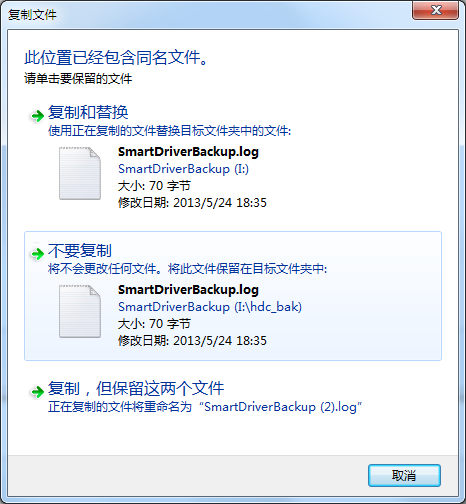
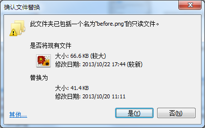
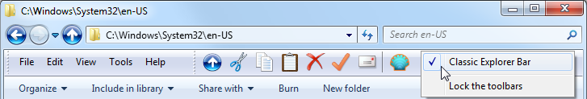
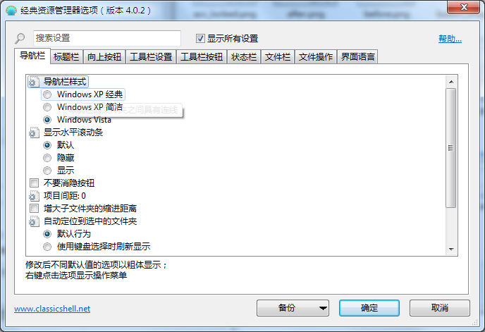
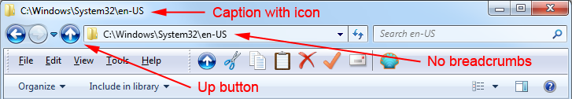
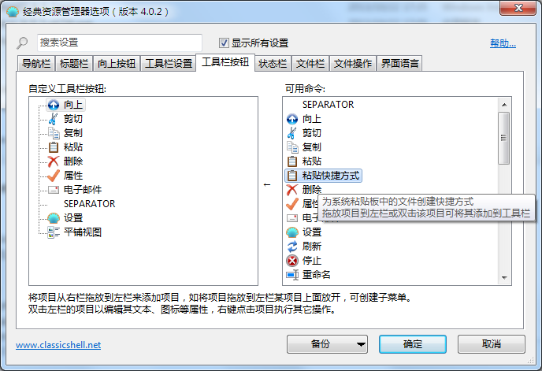
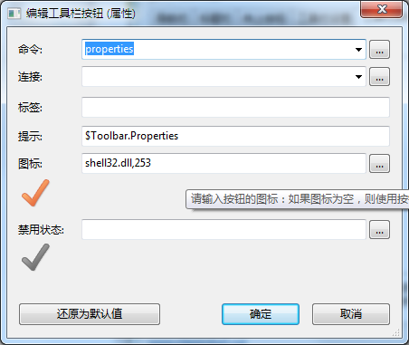
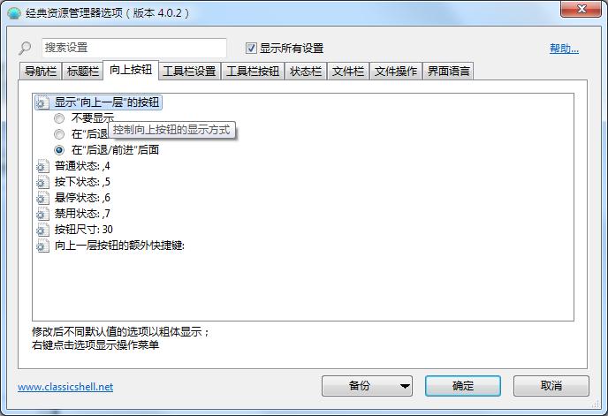
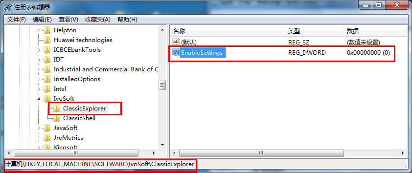

Classic Explorer
Classic Explorer
Classic
Explorer 是一个针对Windows资源管理器的插件:
- 工具栏添加一个Explorer,一些常见的操作(去到上级件夹、剪切、复制、粘贴、删除、属性、电子邮件)。工具栏是完全可定制的
- 取代了复制UI在Windows 7的更加友好的经典版本类似Windows XP
- 处理Alt + Enter在文件夹面板的Windows资源管理器和显示所选文件夹的属性
- 有选项来定制文件夹面板看起来更像Windows XP或扩展按钮
- 可以显示空闲磁盘空间和总文件大小在状态栏
- 可以禁用在地址栏的下拉按钮
- 修复
一些特性,在Windows 7中被打破,去掉的图标
叠加为共享文件夹,文件夹在导航窗格中跳转,
去掉的分类标题在列表视图,和更多
新的复制界面 (Windows 7 only)
在Vista当你复制文件和有冲突了:

这有什么问题吗?
嗯,对
初学者来说充斥半个屏幕的文本,你必须读。也
它是不清楚它的哪些部分是可以点击的。你必须
移动鼠标来发现界面像 卢卡斯艺术
冒险游戏. 最后键盘可用性是可怕的。
告诉它
是的,我知道我在做什么,我想要覆盖所有文件 你去按 Alt+D, 向上,向上,向上, 空格! 它是更难比执行 Akuma
Kara Demon move 在街头霸王3。总有一个时间和地点
对于这些东西和复制文件.
Classic Explorer 插件带回简单对话框从Windows XP:

它是清楚什么是可点击的 (底部的按钮), 有简单的键盘导航(按 Y Yes;, A
复制所有文件),你还可以看见那个文件更新,这是
更重要的。当然,就像在Windows XP,按住 Shift 而点击任何按钮意味着“没有所有”(或者只是按 Shift+N).
如果你点击 更多 你会得到
原来的对话框从Windows。从那里你
将会看到所有的细节,你会得到一个额外的选项来;复制,但
保持两个文件;.
重要提示: 只有UI被取代。底层的系统,实际复制并不受影响.
Alt+Enter 在文件夹面板
Alt + Enter是
通用快捷键在Windows启动性能
选择。但是新版本的Windows它不工作在左边
面板显示文件夹。它只在右边的
文件。这是很繁琐的比Windows XP,Alt + Enter工作
在这两个地方。
解决问题,经典资源管理器插件检测当你按下Alt + Enter
和显示属性为当前选中的文件夹.
Windows Explorer 工具栏
windows Explorer在Vista没有工具栏就像在Windows XP。如果
你想去上层文件夹你必须使用路径栏。如果你想复制或删除一个文件用鼠标你必须
右键单击并找删除命令。鼠标右键菜单会
越来越多的外壳扩展,您已经安装了,
找到合适的命令会花费一段时间.
为了解决这个问题,经典资源管理器插件安装了一个新的工具栏:

可用的按钮有:向上,剪切、复制、粘贴、删除、属性
电子邮件,设置。更多的按钮可以添加从设置对话框。
Hints:
- 按住 Control 键当点击Up按钮打开上级文件夹在一个新的浏览器窗口.
- 按住 Shift 键 当点击删除按钮可以永久删除文件
新工具栏不显示在Explorer自动
安装后。你必须做一些事情之前,你才可以使用它:
- 打开一个新的Windows Explorer窗口(Win键+ E)
- 打开菜单在Explorer去工具(Alt + T),文件夹
选项,视图选项卡,并确保;总是显示菜单,选中。
- 右键单击菜单栏并选择;经典的Explorer;
显示工具栏。
- 如果该选项不可用(你只看到;锁定
工具栏)你可能不得不启用插件从Internet Explorer。
运行IE,右键单击它并选择;经典的浏览器工具栏;。
它会问你如果你想使这个插件。选择;启用,
然后再重复步骤1到3。
- 如果即使这样你看不到,也许浏览器工具栏
扩展系统上被禁用。这通常是默认的
服务器。打开“互联网选项”,去“高级”选项卡,并检查
选择“启用第三方浏览器扩展”.
Status bar
经典资源管理器恢复原来的浏览器状态栏显示空闲磁盘空间和选中文件的大小:

与内置的状态栏,选择大小显示即使超过100个文件被选中。当没有文件被选择所有文件总大小在文件夹显示.
Windows 7 提示: 经典资源管理器提高默认状态栏,而不是取代它。看到它,你必须把它第一次从视图菜单。
状态栏是不同于蓝色
你看到的细节窗格底部的Explorer。你可以关掉
详细讯息面板从组织菜单来节省空间。还存在一个缺陷在Windows 7的Explorer,有时不显示在状态栏的任何文本。按 F5 刷新视图和获得状态的文本.
Windows 8 提示: 经典资源管理器添加自己的状态栏。你应该隐藏默认状态栏以节省空间。
选择视图选项卡,然后点击选项。选择视图选项卡中选择。找到“显示状态栏”复选框,选中它.
设置
你可以访问的设置工具栏或经典Explorer从开始菜单:

你可以选择只看到基本的设置,或所有
可用的设置。鼠标悬停在每个设置看描述
它是为了什么。输入搜索框找到设置的名字。
每一个设置有一个默认值。默认值可以是常数,
或者它可能取决于当前的系统设置。一旦你编辑一个
设置它就变成了“修改”,并以粗体显示。要恢复到
默认值,右键单击
设置。
你可以保存设置到一个XML文件,以及后来的负载他们回来。
点击 备份 按钮来访问这些功能。从那里你可以
也重置所有设置到他们的默认值.
按下OK保存您的设置。大多数的设置将被应用
在下次你打开一个新的Explorer窗口。小部分的设置
需要注销之后,你可以看到改变.
Note: 所有设置窗口可调整大小的。通过调整它们,将它们调整为你想要的大小。他们会记住新的位置.
这是一个可以定制的例子:

点击 工具栏按钮 选项卡来定制工具栏:

列在左边显示当前按钮在工具栏,
和列在右边列表按钮可以添加到
工具栏。您可以拖动按钮从右栏。你可以重新排列按钮上下拖拽。如果你拖动其中一个按钮在另一个您将创建一个
子菜单。
悬停在每个按钮来看到一个简短的描述它做什么。右键单击每个
按钮来访问更多的功能(如删除、重命名等)。从
右键菜单也可以重置工具栏到原始状态。
左栏中的每一项都必须有一个唯一的名称。这是
标识符的项目,只能包含字母,数字和
下划线。一些项目(如分隔符)不能被重新命名。
重要提示:不是所有可用的命令有默认图标或文字。这是因为窗口没有图标之类的东西 撤销, 选择所有, 等。如果您想要使用这些按钮在工具栏中您将必须提供自己的图标。见下面怎么做.
在一个按钮在工具栏,您可以编辑它的属性。双击按钮来编辑:

在这里你可以选择一个命令按钮,其文本和图标。按 恢复默认值 按钮来得到默认的文本和图标选择命令.
The command can be:
- 留空 - 然后如果链接属性被使用,它将作为一个命令
- 一个预定义的命令 - 下拉
- 打开一些文件夹 - 这将打开文件夹在当前浏览器
- 排序属性 - 这类由给定属性的文件夹 - 名称, 类型, 大小 or 日期. 使用 '-' 在前面降序排序: "sort by -name". 您可以使用其他属性如果你知道他们的代码。例如 "按 {B725F130-47EF-101A-A5F1-02608C9EEBAC}排序, 10"是一样的 "按名称排序". 对于多个属性代码参考文件 propkey.h 在 Windows SDK (也可以在此找到 here - 向下滚动到“全属性列表”)。并不是所有的属性代码是有效的或被支持(例如 album year property {56A3372E-CE9C-11D2-9F0E-006097C686F6}, 5 只能当显示音乐专辑)
- 分组 - 类似 排序, 但组由一个给定属性的文件。使用命令 分组 没有禁用分组
- 自定义可执行字符串
- 这可以是一个名称的程序及其参数,或甚至一个URL
(像 http://www.google.com). 您可以使用环境变量 %SystemRoot%. 你也可以使用占位符 %1, %2, %3, %4 and %5:
- %1 路径在
当前文件夹。记住,如果当前文件夹是一个根目录的一个
驱动器它将使用一个反斜杠结束 (如 C:\)
- %2 是选中文件的路径(只有当一个文件被选择)
- %3
是一个名字,一个临时的文本文件,其中包含所有选定的文件。
文本文件中的每一行包含一个文件,它的完整路径
- %4
%3是一样的,但文件是Unicode(UTF16)格式。文件
不包含字节顺序标记。%3和%4不可能都是使用相同的命令
- Note to developers: When
%3 or %4 使用,它的职责是命令来删除
临时文件当它完成。否则临时文件将被留下
浪费磁盘空间。如果命令是一个控制台应用程序
或批处理文件将推出在静默模式没有控制台
窗口
- %5 是一个名称叫
临时的文本文件,它可以用来返回一个命令返回
经典资源管理器。如果第一个字节的文件是255和254,
文件被视为Unicode。只有一个命令只能使用一次。命令
可以:
- 打开文件夹名称 - Explorer导航到给定的文件夹
- 选择的文件名列表
- 选择给定的文件,取消选择其余的。文件名称必须是
一个选项卡或隔开一个换行符。不应包含的文件
一个路径。如果这样做,路径将被忽略
- 刷新 - 刷新 Explorer
- 开发人员-提示:
命令使用%5将运行在静默模式(如命令使用 %3 or
%4) 但
还将等待进程Explorer来完成。这个过程必须
尽快完成,因为Explorer将被暂停在
在执行命令
- 请参见下一小节几个例子如何使用这些参数
这个链接可以是一个文件路径或一个文件夹。如果它是一个文件,
文件将被执行。如果它是一个文件夹,该文件夹将被打开,
一个子菜单(只针对最上级按钮).
图标:
- 留空 - 然后如果链接属性指向一个文件或文件夹,图标的文件或文件夹将被使用
- 资源文件,图标 ID - 例如 %windir%\notepad.exe,2. 不要忘了文件之间的名称和逗号. 确保您使用的是图标的资源ID,而不是图标的索引. 为了达到最好的使用效果 [...] 按钮图标
- ,图标 ID - 同上,但资源文件 ClassicExplorer.dll 本身。这是有用的Classic Explorer的图标
- 图标文件 - 例如 C:\Program Files\Mozilla Thunderbird\Email.ico
- 无 - 将使用一个空白图标
如果标签或提示属性 $ (美元符), 然后
系统将会把它作为一个字符串的名字 ExplorerL10N.ini
文件。实际的文本将取决于当前语言设置。这
当创建一个工具栏是有用的,可以被多个语言使用.
开发人员提示: 按钮为自定义命令可以检查或禁用。工具栏检查注册表键 HKCU\Software\OpenShell\ClassicExplorer
对于一个DWORD值的名称按钮(左中使用的名称
列)。0表示正常,1和2是检查是禁用的。工具栏
在启动时读取注册表的键值。迫使按钮来更新
他们的国家之后,你需要找到所有浏览器窗口,定位
子窗口的类OpenShell.CBandWindow, 发一个消息 WM_CLEAR. 这是有用的,如果您正在开发一个自定义的exe用于工具栏.
自定义命令示例
0) 必要时使用引号
为了支持路径
包含空格,你应该使用单引号将路径参数。这个
并不总是必需的,像在例子1和2所示。让
确定你测试你的命令与路径含有空间来避免
出错.
1) 显示当前文件夹
使用命令行: cmd.exe /k echo %1. %1 将被替换为当前文件夹的路径.
2) 打开选定的文件在记事本
使用命令: %SystemRoot%\notepad.exe %2.
%2 将会被替换的全称被选中的文件。它不
需要在引号，因为记事本使用整个命令行作为一个文件的名字.
3) 复制选定的文件到上级文件夹
创建一个bat文件叫 C:\CopyParent.bat:
set list=%1
set list=%list:"=%
for /F "delims=" %%i in (%list%) do copy /Y "%%i" ..
del %1
使用命令: C:\CopyParent.bat "%3".
%3 将被替换为一个文本文件,包含完整的名字
选定的文件。批处理文件将读取每一行的文本文件,
和复制所选的每一个文件到父文件夹。最后
批处理文件删除最初的
临时文件。前两个 set 命令删除引用从%1的参数.
4) 选择所有文本文件
创建一个Bat文件 C:\SelectText.bat:
echo select %1
dir *.txt /b %1
使用命令: C:\SelectText.bat "%5".
%5 将被替换为一个空白文本文件,命令必须输出
单词“选择”和想选择的一个文件列表。“dir
*.txt / b”命令提供了这个列表.
Administrative Settings
这些设置是
每个用户和存储在注册表中。默认情况下每个用户都可以编辑
他们所有的设置。管理员可以锁定特定的设置,所以
没有用户可以编辑他们:

在这个例子中,设置“显示按钮”是锁定的,永远
“之前后退/前进”,不能改变任何用户。这是实现
通过添加设置 HKEY_LOCAL_MACHINE\SOFTWARE\OpenShell\ClassicExplorer 注册表键。创建一个字符串值称为“ShowUpButton”,并将它设置为“BeforeBack”.
在某些情况下,您可能不希望锁定为所有用户的值,只是修改初始值的设置。在这样的情况下添加“默认”名称的值。例如,如果你想要向上按钮是默认之前回来,但仍允许用户改变它,如果他们愿意,创建一个字符串值命名为“ShowUpButton_Default”,并将它设置为“BeforeBack”。
最简单的方式了解注册表名称的设置及修改它,然后检查HKEY_CURRENT_USER\Software\OpenShell\ClassicExplorer\Settings.
有时你可能想锁定设置为默认值,但你
不知道默认值是多少时。然后创建一个DWORD值和设置
为 0xDEFA.
还有一个全局设置 EnableSettings. 将其设置为0的
注册表来防止用户打开设置对话框:

你可以启用或禁用经典Explorer为单个进程
使用2注册表设置”ProcessWhiteList”和“ProcessBlackList”. ProcessWhiteList is
的进程列表,经典的Explorer将负载。仅使用
文件名称的过程(如“notepad.exe”),单独的多个名称
用逗号或分号分开. ProcessBlackList
是一个进程列表,经典的Explorer将不会加载。你
应该只使用其中一个两个列表。如果两个列表中指定的
黑色的列表将被忽略。这个列表仅仅是用在当你启用
功能支持流程除了Explorer。在这时这些特点是:共享重叠图标和更换
对于复制对话框.
依赖Windows设置
一些经典的Explorer设置需要特定的窗口设置启用:
- Windows Vista导航窗格的风格 - 需要Windows使用Aero或基本主题
- Auto-navigate to the selected folder
- 这个设置可以设置为“总是”只有当Explorer设置为
“自动扩展到当前文件夹”。 一般 tab of Tools -; Folder Options
- 显示在标题栏标题
- 标题或者显示的完整路径名或只有名字的
当前文件夹。要查看完整的路径需要启用“显示
完整的路径在标题栏(经典主题只有)“在 View tab of 工具 - 文件夹选项
- 所有的状态栏设置 - 需要状态栏可见(不要混淆细节窗格)。检查 View -; Status bar
Localization
用户
接口(除了设置对话框)是本地化35
语言.
设置对话框是翻译在一个较小的数量的语言。
默认的安装只包含英语。更多的语言可以
下载的 translations page. 确保您下载了翻译包为匹配的版本的Classic Start.